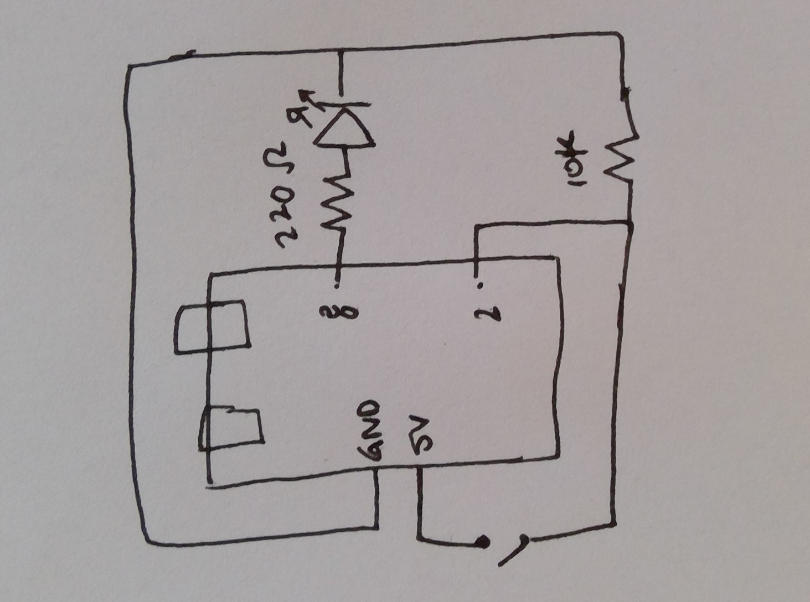

Maike's Assignment 2!


RED LED: 5V - 1.8V (this is the voltage drop) = 3.2 3.2V/0.02A = 160 Ohms. Thus, I used the 220 resistor for the Red Led, Button: I used the 10k resistor.
Schematic:
Here is all the documentation for assignment 2!
Here is my code:
const int buttonPin = 2; // number of the pushbutton pin
const int ledPin = 8; // number of the led pin
int buttonState = 0; // variable for reading the pushbutton status
void setup() {
pinMode(ledPin, OUTPUT); //initialize the LED pin as output
pinMode(buttonPin, INPUT); //initialie the push button as input
}
void loop() {
buttonState = digitalRead(buttonPin); //read the state of the push button
if (buttonState == HIGH) { // if push button is pressed
// led is turned
for (int fadeValue = 0 ; fadeValue <= 255; fadeValue += 5) { //fade in
// sets the value (range from 0 to 255):
analogWrite(ledPin, fadeValue);
// wait for 30 milliseconds to see the dimming effect
delay(30);
}
for (int fadeValue = 255 ; fadeValue >= 0; fadeValue -= 5) { // fade out
// sets the value (range from 0 to 255):
analogWrite(ledPin, fadeValue);
// wait for 30 milliseconds to see the dimming effect
delay(30);
}
} else {
//turn led off
digitalWrite(ledPin, LOW); // if push button is not pressed.
}
}